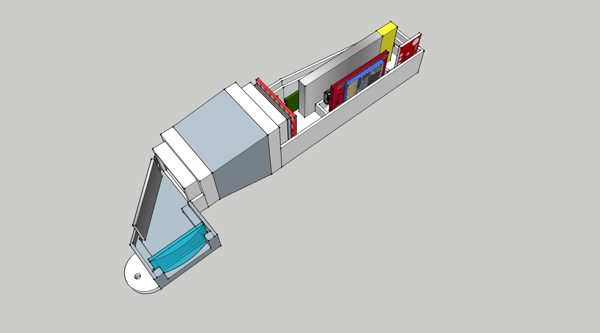

GALLERY

INNOVISION is a non-intrusive,non-annoying wearable device- an optical head mounted display.We present an automated digital system capable of presenting the digital world in front of your eyes,without distracting you from your real world.Get all the notifications ,calls,emails in a blink of eye.Devices will be connected via bluetooth and have a powerful battery backup.
After observing the problems faced by people of all categories i.e.,students faced problems in their concentration,electricians wasted a lot of time in taking multiple reading etc. We wanted a device which could solve all these problems and moreover be economically feasible so that any person in need of this device could easily afford it .GOOGLE GLASS is alfeady in market but it is not affordable by everyone. So ,we started researching upon the methods and ways we could take so that the required device can be prepared in low cost which would be economical and feasible by every person.We took help of our teachers,seniors and various web sites ,and ended in finding many efficient ways. People using large electronics waste a lot of time in watching the readings ,docters often loose concentration while taking various readings,students working on projects wasted time in seeing mobile notifications and many more.So we wanted to make a device which could solve all these problems and we resulted in making our device INNOVISION:Visualiozing the digital world.Smarter than smart watch,with more specifications,more convenient,less economical.This device can be used in any climatic conditions ,capable of satnding with us in rain ,storm,day ,night without any loss in its efficiency.
A Project titled “INNOVISION: Visualizing the Digital World” by the students of B.Tech CSE 2nd year won the 3rd prize at INNOTECH 2K18 (Student Project exhibition) organized at KIET, Ghaziabad held on 1st Nov 2018.
Student Team (under the mentorship of Ms. Shaili Gupta):
1. Suraj Kumar Jaiswal
2. Utkarsh Upadhyay
3. Upendra Singh
4. Kushagra Srivastava
They received a Cash award of Rs 3000/- along with certificate of merit and Gift Vouchers.
A Project titled “INNOVISION: Visualizing the Digital World” by the students of B.Tech CSE 2nd year won the 3rd prize at SPARK 2K18 (Student Project exhibition) organized at IMSEC, Ghaziabad held on 17 SEPT 2018.
Student Team (under the mentorship of Ms. Shaili Gupta):
1. Suraj Kumar Jaiswal
2. Utkarsh Upadhyay
3. Upendra Singh
4. Kushagra Srivastava
An innovative Project titled “INNOVISION: Visualizing the Digital World” by the students of B.Tech CSE 2nd year won the 3rd prize at CROSSROADS-2018 (Student Project Exhibition) organized at HI-TECH, Ghaziabad held on 2-3 Nov 2018. They received a Cash award of Rs 2000/- along with certificate of merit.
Faculty Mentor: Ms. Shaili Gupta
Student Team:
1. Mr. Suraj Kumar Jaiswal
2. Mr. Utkarsh Upadhyay
3. Mr. Upendra Singh
4. Mr. Kushagra Srivastava